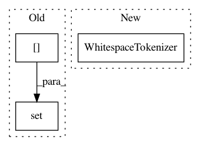

a00769ef51b0b0da7465fe6ce81b6391acc69a89,tests/nlu/featurizers/test_count_vectors_featurizer.py,,test_count_vector_featurizer_char,#Any#Any#,250
Before Change
train_message = Message(sentence)
tokens = WhitespaceTokenizer().tokenize(sentence)
train_message.set(TOKENS_NAMES[TEXT_ATTRIBUTE], tokens)
data = TrainingData([train_message])
ftr.train(data)
After Change
ftr.train(data)
test_message = Message(sentence)
WhitespaceTokenizer().process(test_message)
ftr.process(test_message)
assert np.all(
In pattern: SUPERPATTERN
Frequency: 3
Non-data size: 3
Instances
Project Name: RasaHQ/rasa
Commit Name: a00769ef51b0b0da7465fe6ce81b6391acc69a89
Time: 2020-01-03
Author: tabergma@gmail.com
File Name: tests/nlu/featurizers/test_count_vectors_featurizer.py
Class Name:
Method Name: test_count_vector_featurizer_char
Project Name: RasaHQ/rasa
Commit Name: a7fcffb524edc5d44ecf1e6b56cc517f0073b23f
Time: 2020-10-15
Author: f.koerner@rasa.com
File Name: tests/nlu/featurizers/test_convert_featurizer.py
Class Name:
Method Name: test_convert_featurizer_process
Project Name: RasaHQ/rasa
Commit Name: a00769ef51b0b0da7465fe6ce81b6391acc69a89
Time: 2020-01-03
Author: tabergma@gmail.com
File Name: tests/nlu/featurizers/test_count_vectors_featurizer.py
Class Name:
Method Name: test_count_vector_featurizer